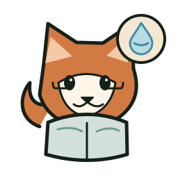
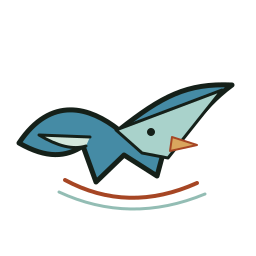
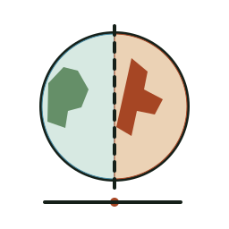
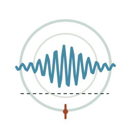
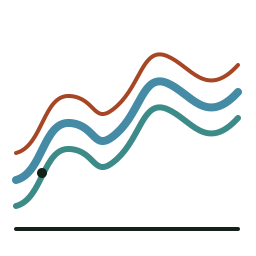
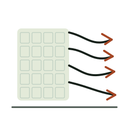
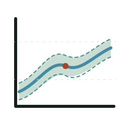
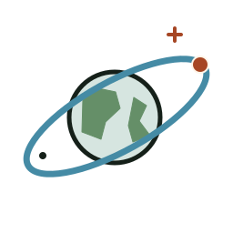
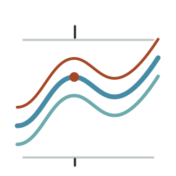
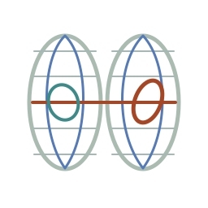

Ge
Existing Mascotawesome-tech-feeds
Geo Gecko
RSS discovery and curation as engineering infrastructure.
Original asset: see source link
Identity sheet ↗RSS discovery and curation as engineering infrastructure.
Make agents prove their patches.
Find the geographic bug, not just the code bug.
Curious, incisive, supportive peer reviewer.
Orient, learn and improve through a long-horizon learning map.
Scout STAC catalogs before compute.
Check retrieval and reanalysis assumptions, vertical profiles and validation.
Check calibration, controls, selectivity and mechanism.
Check sampling, drivers, uncertainty and attribution.
Check prototype scope, physical validation and performance claims.

Check gauge support, basins, balances and temporal scales.
Check mechanism, characterization, benchmarks and stability.
Inspect sensor lineage, registration error and independent validation.
Clarify academic Chinese terms with precision and restraint.
Structure modular coding workflows and reliable software construction.

Connect scientific claims, evidence and narrative logic.

A common geographic extent, separated by observation dates.

Earthquake events in space and time, with a seismogram motif.

A set of directed flow paths in geographic space.

An explicit translation from sampled image field to contours.

A central estimate with a defensible uncertainty band.

An Earth orbit, a tracked body and an observation viewpoint.

Spectral response lines under varying water optical properties.

A graticule becomes deformed in a projection.
Respect the current typography-first profile / website identity.
Respect the current typography-first profile / website identity.